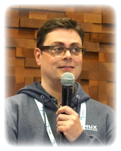
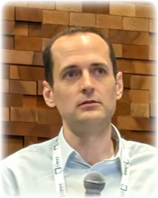

A storage standards update at LSFMM+BPF
Linux storage-stack projects
Petersen started with a quick overview of a number of areas of interest to the storage community, the first of which is "flexible data placement". That, he said, is "the new cloud-vendor favorite way" to address write-amplification issues; there is a new favorite every year, he added. Flexible data placement allows the kernel to tell storage devices which blocks belong together so that they can be updated in a single operation. That should make the device's garbage-collection process easier.

A related area is computational storage — an NVMe namespace without any actual storage associated with it. Instead, these devices can offload operations like compression and encryption, working directly with data stored in other namespaces.
"Hinting" is telling storage devices more about the data that they are holding; again, it is intended to allow the devices to make better decisions about data placement. There are a lot of devices that can benefit from hinting, but developers have spent years trying to get it to work properly. That work will continue, he hinted.
Some types of devices can support atomic block-write operations, meaning that either the entire operation succeeds, or none of it does. The kernel would like to make it possible for user space to use that capability where it exists, but it's a complicated task. The need to find some sort of common ground between the SCSI and NVMe implementations of atomic writes makes it even more so.
Checksums are often used to detect (and possibly correct) the corruption of stored data, but the 16-bit checksums that have long been in use were designed for a world of 512-byte blocks; they are too small for the larger blocks used now. Both SCSI and NVMe have added 32-bit and 64-bit checksum formats that are being deployed, though an audience member commented that it is not being pushed hard in the SCSI world. This feature, Petersen said, is most useful in cloud-storage environments, where data corruption is more common.
Finally, Petersen mentioned NVMe live migration. If a virtual machine that is running with an NVMe-like device is migrated to a new physical host, the device needs to migrate with it. There are currently efforts afoot to define a standards-based approach for that type of migration.
CXL 3.0
Haché then took over to present some highlights from the new CXL 3.0 standard. The specification, he said, is 1,100 pages in length; mercifully, he did not plan to cover the whole thing during the session. Memory, he said, is traditionally a static resource physically attached to the CPU, but we are heading into a world where it is dynamically pooled instead. The kernel will have to adapt to this world.

The CXL 2.0 specification added "multiple logical device" support, where each function supported by a CXL device would be attached to a single host computer. This mechanism works, but it requires a sophisticated switch to implement, and that switch increases memory-access latency considerably. To address this problem, the 3.0 specification added a "multi-headed device" mode that adds more host ports and moves the switch into the controller. This mode, Haché said, does not scale as well, but it does improve latency.
On top of this mechanism is the "dynamic capacity device" (DCD) layer, which controls the allocation of CXL resources to hosts. Before DCD, changing a host's memory allocation was a disruptive act that required remapping the host's physical address space. In practice, that required rebooting the host. This kind of change was "better than popping out a DIMM", he said, but was still painful. With DCD, instead, the maximum capacity of each CXL resource is exposed to the host from the beginning, and DCD tells the host what its actual memory allocation is. CXL memory is divided into blocks, then grouped into extents that can be allocated to hosts. The extent lists are small and easy to update with the hosts.
The tree-like hierarchy of CXL controllers described in the 2.0 specification turned out to limit scalability, so version 3.0 has added a way to organize CXL resources into fabrics, with switches densely interconnected with each other. There is a provision for fabric-attached memory that is not part of any specific host; accelerators can also sit on the fabric and access resources directly. A CXL fabric, Haché said, cannot provide the same bandwidth that Ethernet can, so it will not be possible to put an entire data center on one fabric. But it will be possible to create large memory pools, with on the order of 1,000 hosts and 1,000 memory devices, and share that memory across the hosts with around 100ns latency.
Haché suggested that attendees download the specification and read it for themselves, it can be had from computeexpresslink.org after agreeing to a lengthy set of terms and conditions.
David Howells said that CXL starts to sound a lot like InfiniBand, and asked how the kernel was expected to actually use CXL resources. Haché answered that, on most systems, CXL memory would just show up as if it were local memory, contained within a CPU-less NUMA node. The kernel should not need to do anything special with it other than realizing that it will be a bit slower, much like persistent memory. Some sort of tiering approach is likely to be necessary at some point.
Dan Williams added that CXL has been defined so that the host does not really even need to know what it is. The BIOS can set everything up before the system boots. CXL memory, he said, is best used when it is normal and uninteresting. But it can be used in more interesting ways when the need arises.
Matthew Wilcox complained that nobody was talking about contention. What happens when there are 1,000 hosts all accessing the same cacheline in CXL memory? That could lead to multi-second delays for cache-line access, which could "break CPUs"; the prospect scares him. Haché pointed out that memory-pooling devices can have quality-of-service capabilities that allow access limits to be set on a per-host basis; that could prevent the worst problems. Wilcox responded that it can often be hard to tell highly active users from malicious users. Another audience member said that, for now, the most common use case will be cloud computing, where memory will be allocated to a single host and contention issues will not arise. There will be high-performance computing applications in the future that want to more fully use CXL's capabilities, though.
James Bottomley, at the close of the session, asked what the "killer app" for CXL would be. Haché responded that memory capacity and bandwidth are a big problem for data centers currently. There is only so much memory that can be physically connected to a CPU before it runs out of DIMM slots; there are efforts to increase memory densities, but they are expected to double the price of memory. In many data centers now, memory alone represents 50-60% of the cost of a server, and that percentage will only go up. CXL offers the alternative of connecting terabytes of DDR4 memory and making the resulting capacity available to a bunch of servers. There are other interesting use cases, but RAM costs are the biggest motivating factor currently, he said.
Bottomley responded that this was the overcommit issue again; vendors are trying to sell the same memory to multiple customers on the assumption that they won't all use it all simultaneously. CXL is a good way of not getting caught at that game, he said. Haché refused to comment on that point.
The session ended there, but the changes discussed here were to reappear
many times throughout the conference, where they would be discussed in
greater detail.
| Index entries for this article | |
|---|---|
| Kernel | Compute Express Link (CXL) |
| Conference | Storage, Filesystem, Memory-Management and BPF Summit/2023 |
Posted May 12, 2023 11:33 UTC (Fri)
by walex (guest, #69836)
[Link]
I remember some decades ago a discussion with Larry McVoy where I pointed out the lack of hinting and preallocation even in cp, where it is trivial (never mind ld.so etc. or stdio itself). Relatively recently at least rsync got --preallocate.
Posted May 18, 2023 15:55 UTC (Thu)
by flussence (guest, #85566)
[Link]
Seeing this reminded me the Sony PS5 does something similar; userspace access to the NVMe drive is mediated by a (proprietary) hardware compression chip so it appears faster than it is, which is already pretty fast since IIRC it has 12 PCIe gen4 lanes while the standard form factor only has 4.
A storage standards update at LSFMM+BPF
«"Hinting" is telling storage devices more about the data that they are holding; again, it is intended to allow the devices to make better decisions about data placement. There are a lot of devices that can benefit from hinting, but developers have spent years trying to get it to work properly. That work will continue, he hinted.»
A storage standards update at LSFMM+BPF